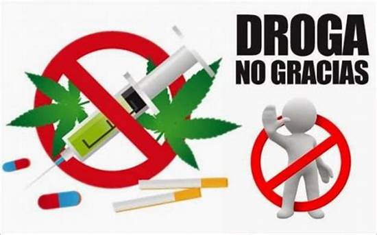

Bienvenido
Este portal tiene como objetivo educar e informar sobre las drogas más comunes, sus efectos, riesgos, consecuencias legales y cómo afectan a la salud física y mental.
Puedes explorar cada sección para conocer más detalles sobre cada sustancia.
Espacio para imagen ilustrativa:
centros de ayuda
neza
un nuevo dia
centro primario de adicciones
imss
videos sobre las adicciones
para empezartodo sobre las drogas
cambios
centros de ayuda
nezaun nuevo dia
centro primario de adicciones
imss
videos sobre las adicciones
para empezartodo sobre las drogas
cambios
mas centros de ayuda con sus telefonos
Centro de Atención Ciudadana contra las Adicciones: 800 911 2000 -Monte Fénix Querétaro: 442 212 2543 -Centro Constitución de 1917 (Ciudad de México): 55 5970 3397 -Clínica para Adicciones (Ecatepec de Morelos): 55 6967 3086 -Centro Médico Especializado en Rehabilitación (Texcoco): 595 925 0949 -Consejo Ciudadano para la Seguridad y Justicia: 555 533 5533 -Línea de Ayuda Origen: 800 015 16 17 -Centro de Integración Juvenil: 555 212 1212 / 555 999 4949
integrantes
el otropantoja
gael